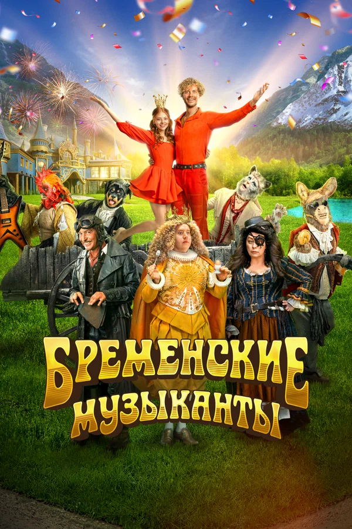

Бременские музыканты

7.3
Обзор
Трубадур и его друзья-самозванцы — Пес, Кошка, Осел и самовлюбленный
Петух — объединились, чтобы совершить подвиг. Прежде всего они должны
рассмешить дочь Короля, но встреча с Принцессой грозит опасным
приключением. Против Трубадура и его друзей — коварные враги, интриги
и ловушки, но за любовь надо сражаться. А тут еще Принцесса сбежала из
дворца. В одном клубке — преступные схемы Разбойников, интриги Сыщика,
капризы и тайны королевской семейки, но веселые музыканты с неутомимым
Трубадуром заставят всех плясать под свою дудку.